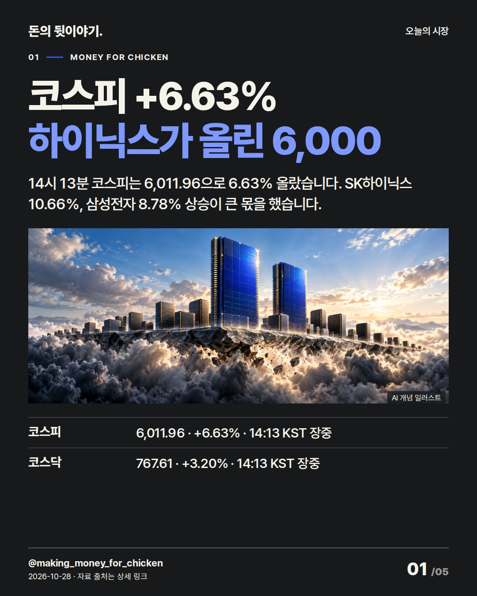
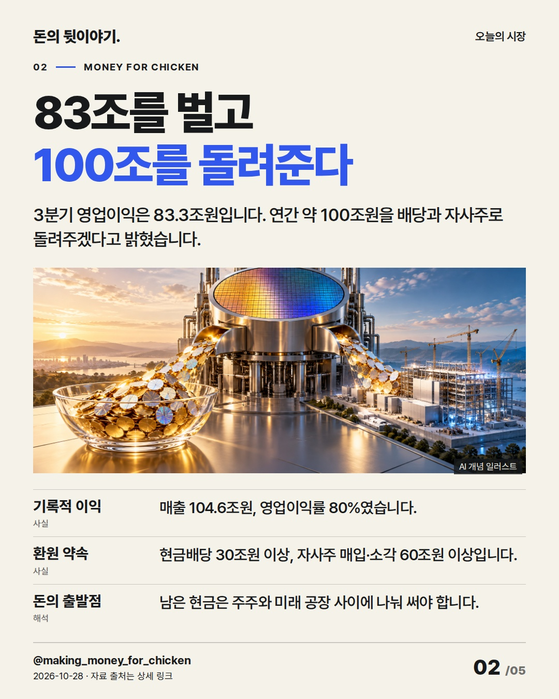
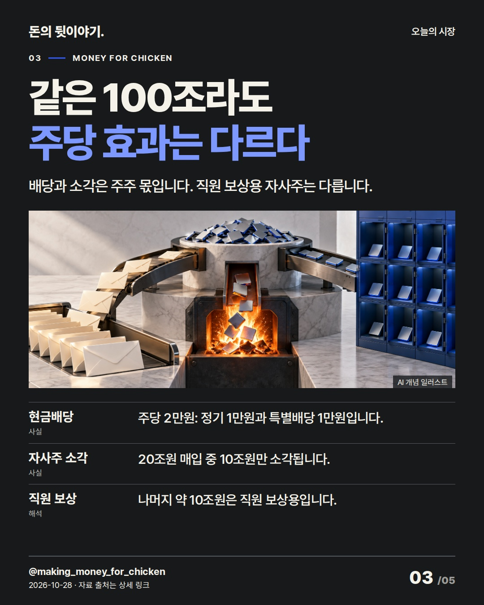
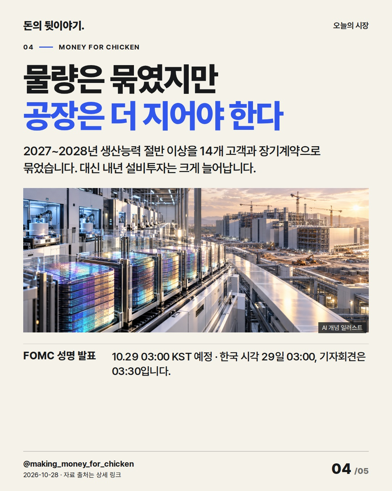
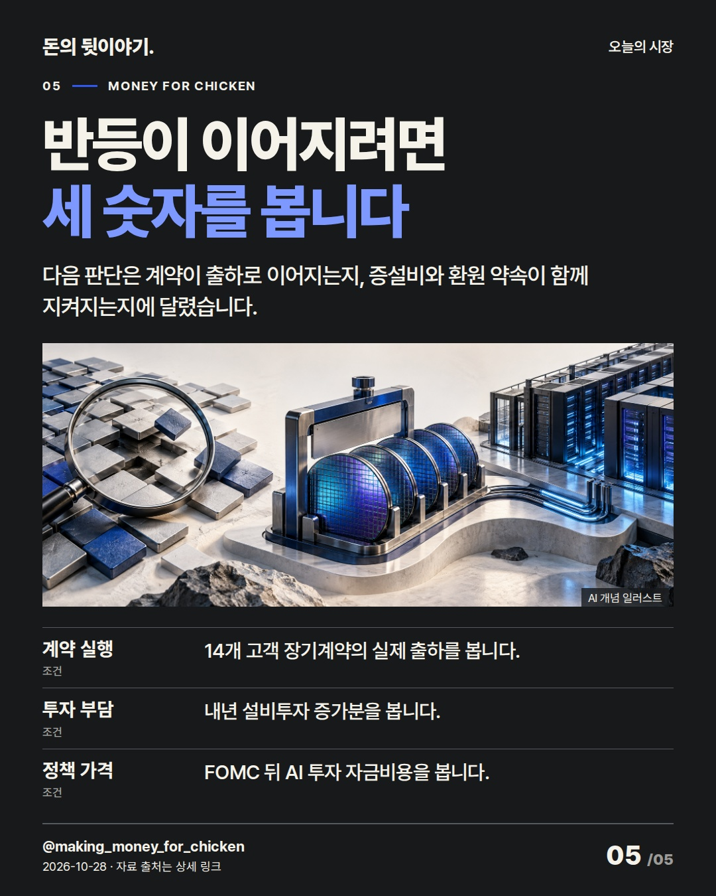

14시 13분 코스피는 6.63% 올라 6,000선을 되찾았습니다. SK하이닉스의 기록적 이익과 100조원 환원안이 반도체 상승을 이끌었지만, 돈의 용도별 주당 효과는 다릅니다. #코스피 #SK하이닉스 #반도체

14시 13분 코스피는 6,011.96으로 6.63% 올랐습니다. SK하이닉스 10.66%, 삼성전자 8.78% 상승이 큰 몫을 했습니다.
AI 생성 개념 일러스트 · 실제 현장이나 공식 제품 사진이 아닙니다.

3분기 영업이익은 83.3조원입니다. 연간 약 100조원을 배당과 자사주로 돌려주겠다고 밝혔습니다.
AI 생성 개념 일러스트 · 실제 현장이나 공식 제품 사진이 아닙니다.

배당과 소각은 주주 몫입니다. 직원 보상용 자사주는 다릅니다.
AI 생성 개념 일러스트 · 실제 현장이나 공식 제품 사진이 아닙니다.

2027~2028년 생산능력 절반 이상을 14개 고객과 장기계약으로 묶었습니다. 대신 내년 설비투자는 크게 늘어납니다.
AI 생성 개념 일러스트 · 실제 현장이나 공식 제품 사진이 아닙니다.

다음 판단은 계약이 출하로 이어지는지, 증설비와 환원 약속이 함께 지켜지는지에 달렸습니다.
AI 생성 개념 일러스트 · 실제 현장이나 공식 제품 사진이 아닙니다.
{
"improvement": "최근 5편의 약점은 첫 장 결론을 뒤에서 추상어로 반복한 점이었습니다. 이번 개선은 100조원을 배당·소각·직원보상·투자로 나눠, 누가 돈을 받고 어떤 선택의 대가가 생기는지 장마다 새 근거로 설명한 것입니다.",
"reason": "불스토리는 공식 사이트 본문 전체만 읽었고 Instagram 카드는 보지 않았습니다. 투자재원 선택이 주주환원과 연결되는 순서를 참고했습니다. 보완 사례는 개인 투자자 Ian의 공개 원문 전체이며, 환원 총액과 실제 소각액을 구분한 점을 반영했습니다.",
"application": "초안 '하이닉스 호실적에 코스피 6000'을 '코스피 +6.63% / 하이닉스가 올린 6,000'으로 고쳤습니다. 2장에서 영업이익과 환원안을 답하고, 3장에서 배당·소각·직원보상의 차이, 4장에서 장기계약과 증설비를 연결했습니다.",
"avoided_repetition": "표지의 상승 결론을 마지막 장에서 되풀이하지 않고 계약 고객 수·자본지출·환원 구성을 새 판단 조건으로 남겼습니다. '여력·관건·입증'과 형식적 진행 멘트, 관련 없는 종목 등락은 버렸습니다. 다음 편은 지수 상승 종목 수를 확보해 시장 폭을 보완합니다."
}투자 참고용 · 매수·매도 권유 아님.